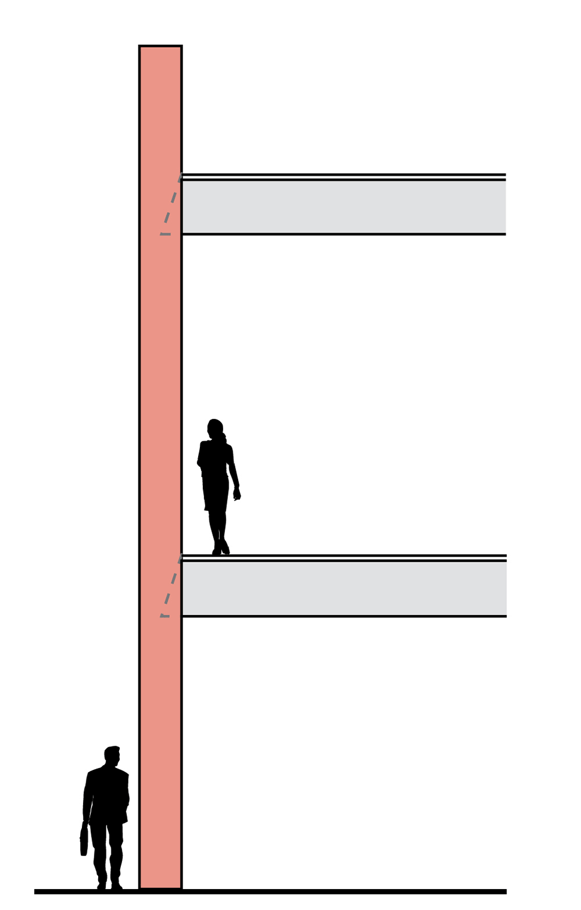
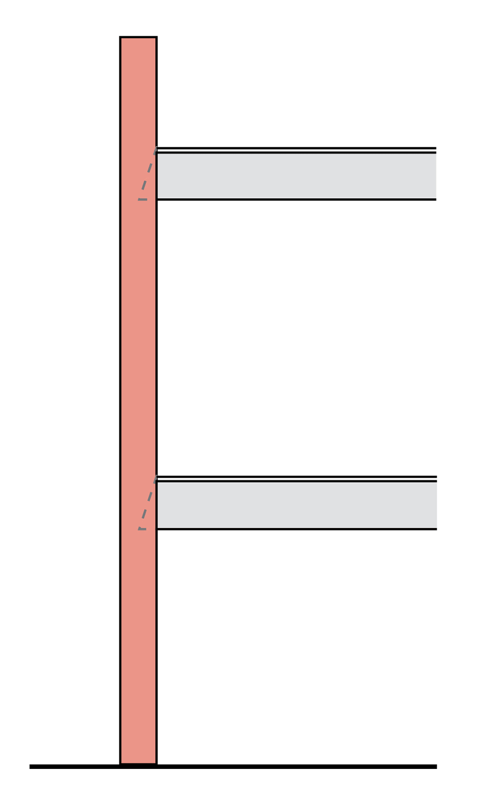

During an earthquake
Unreinforced masonry buildings are vulnerable because the walls and parapets aren’t securely tied to the floors and roof. In an earthquake, parapets can break away, walls pull apart and the floors collapse. Retrofitting reduces the danger.
Parapet breaks off (URM)

Building collapses (URM)

Building stays intact (retrofit)

STEPHANIE REDDING / THE SEATTLE TIMES